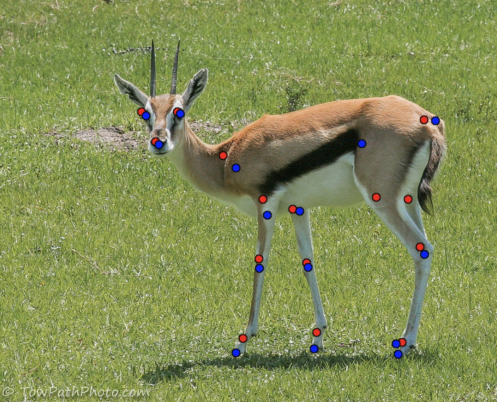
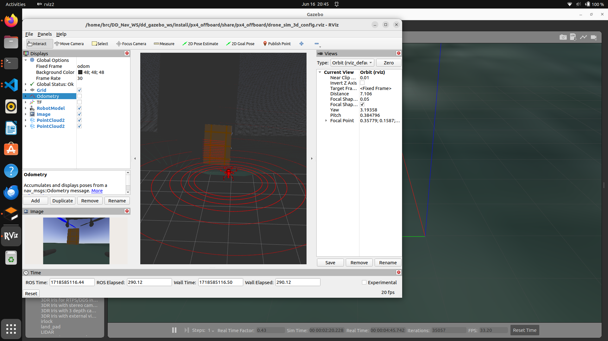
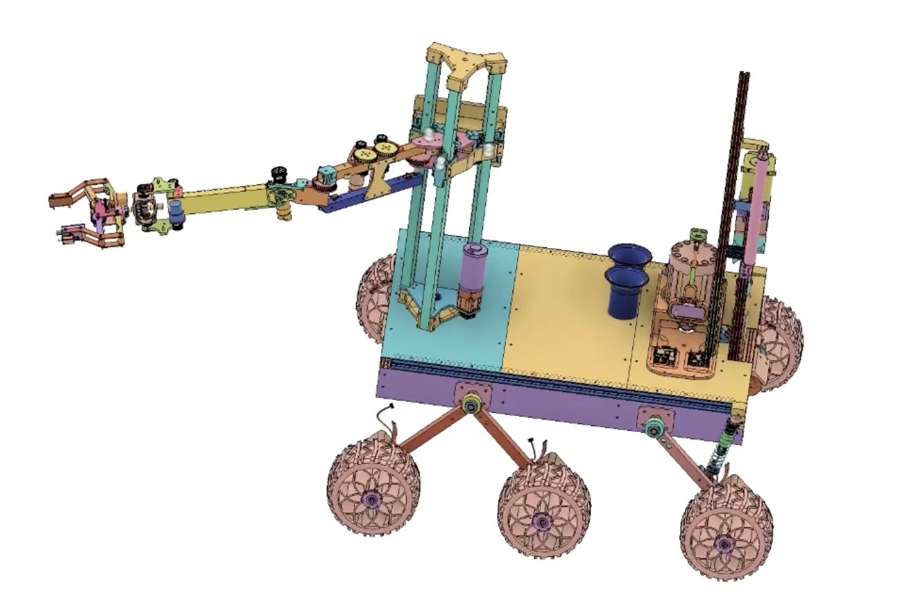
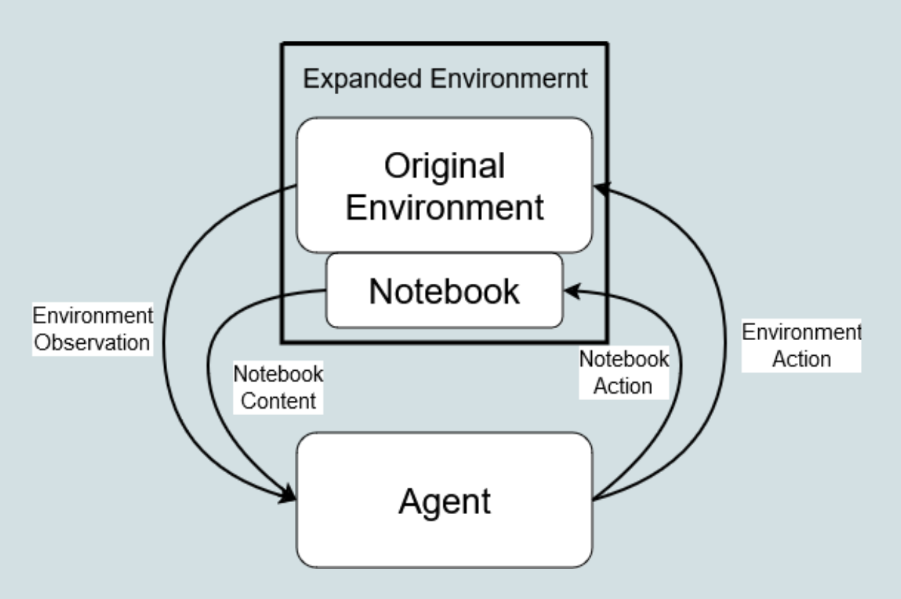
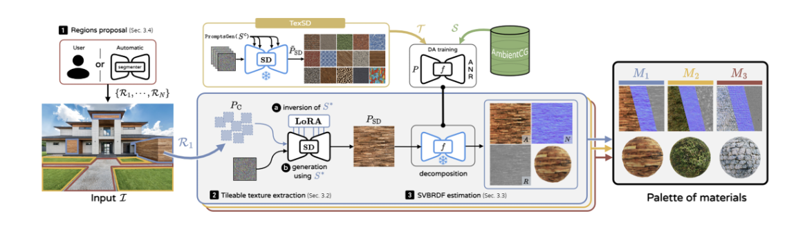
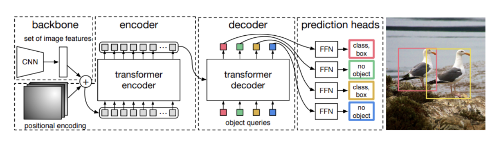

Josh Mansky
M.S. ECE @ Purdue
generative modeling
perception
visual reasoning
about me
I am currently a masters student at Purdue focused on understanding how to transform easily capturable media into metrically and physically accurate, editable, and interactible 3D mesh-based simulations. I aim to digitize indoor environments and enhance the data robots can use to understand the world.
research interests
- Generative modeling: Developing controllable models that synthesize realistic scene geometry, appearance, and dynamics from sparse captures.
- Perception: Building robust scene understanding pipelines that estimate structure, object properties, and uncertainty for robotic systems.
- Visual reasoning: Connecting perception to semantic and physical reasoning so robots can plan and interact reliably in 3D spaces.
Background: I previously got my B.S. in Computer Engineering at Purdue and worked in the VAA and VIPER labs. I currently am the Co-Founder of UpLiv Technologies.
Beyond Work: Outside of work, I enjoy playing hockey, golf, and soccer, competing in powerlifting competitions, and playing the piano.
Research
Projects

Drone Delivery
Autonomous navigation and sensing stack work for delivery-focused robotic systems.

Boiler Robotics
Robotic platform design, controls integration, and hardware system development.

Notebook for Agents
Notebook-style interfaces and experimentation for practical agent orchestration workflows.

MaterialPalette Reimplementation
Reimplementation and evaluation of MaterialPalette methods and outcomes.

DETR Reimplementation
A practical DETR reproduction with implementation details and evaluation takeaways.